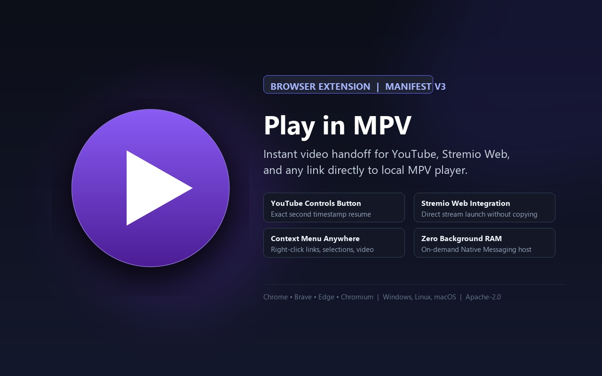
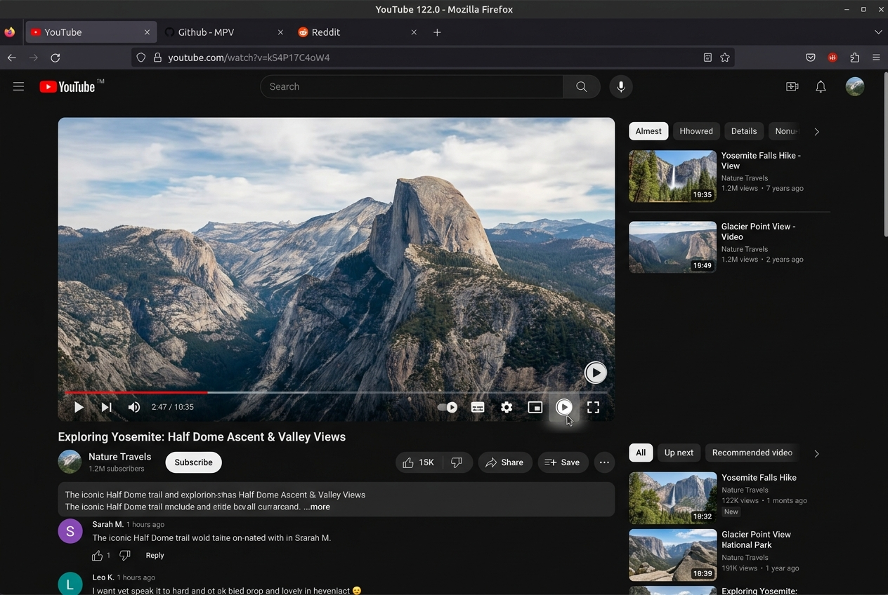
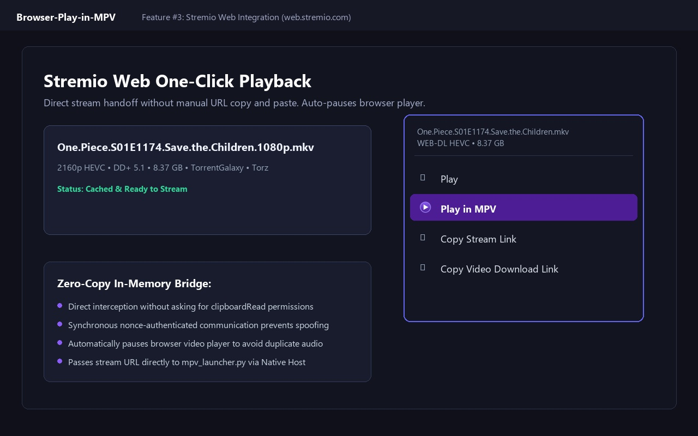
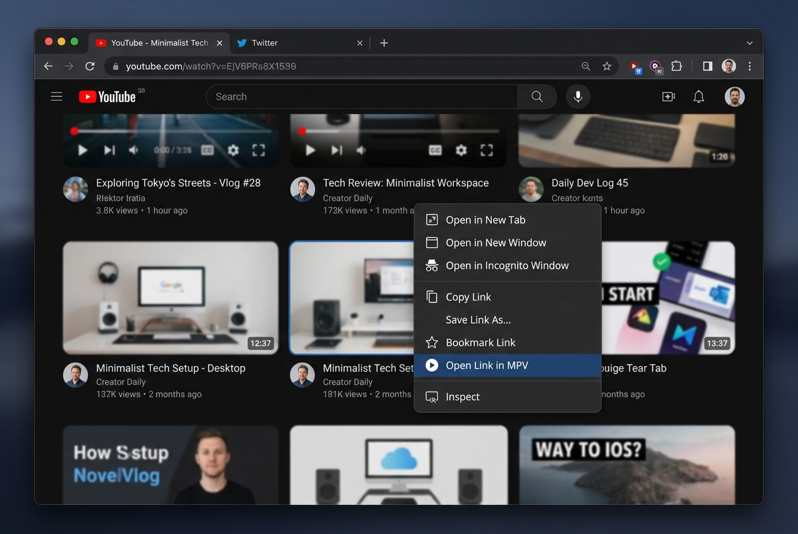

A lightweight, privacy-focused browser companion. Hand off YouTube streams at your exact playback timestamp, dispatch Stremio Web media with one click, or right-click any video across the web to launch directly into your hardware-accelerated MPV player.
Browser-Play-in-MPV/extension

No background servers. No open network ports. Pure Manifest V3 event architecture combined with local operating system IPC.
Injects an unobtrusive button directly into YouTube's player controls. Reads the active seekbar timestamp, media title, and URL, opening MPV at the exact current second.
Hooks natively into Stremio Web (web.stremio.com and app.strem.io) stream context menus. Dispatches torrent or HTTP stream links directly to MPV and auto-pauses the browser player.
Right-click any link, video thumbnail, HTML5 media element, or highlighted URL across any website to send it directly to MPV with instant audio/video playback.
Communicates via local standard input/output with Python. Avoids running vulnerable localhost HTTP daemons, eliminating network attack surfaces and persistent background memory drain.
Enforces scheme validation (http:, https:, magnet:), escapes titles, and employs the -- argument terminator before media URLs to prevent command-line option injection.
MPV launches with its full suite configuration, automatically inheriting your local yt-dlp.conf, HDR/SDR tone-mapping, ModernZ OSC, and exported cookies for authenticated or members-only video streams.
Click any screenshot below to inspect high-resolution interface details.

Injected into YouTube's bottom controls next to the miniplayer. Preserves current playback position and launches MPV without audio pops or window flicker.

Native Stremio Web stream handoff. Right-click or click stream actions in Stremio Web to route video streams directly into MPV while automatically pausing the web player.

Right-click any link, video player, audio track, or page background to stream video instantly in MPV with full GPU debanding and tone-mapping.
How Play in MPV bridges browser isolation and native media playback securely.
Unlike traditional browser extensions that run vulnerable background HTTP servers on localhost, Play in MPV utilizes Chromium's native standard I/O messaging channel:
+-------------------------------------------------------------------------------+
| 1. Web Page & Content Script (Isolated DOM Environment) |
| - YouTube Player Hook: Reads active playback second and media title |
| - Stremio Web Bridge: Extracts stream URL, pauses web audio/video |
| - Context Menu Handler: Extracts target link or media source |
+---------------------------------------+---------------------------------------+
| chrome.runtime.sendMessage()
v
+-------------------------------------------------------------------------------+
| 2. Manifest V3 Background Service Worker (Transient / Event-Driven) |
| - Sanitizes payload, validates URL scheme (http:, https:, magnet:) |
| - Dispatches JSON payload to Native Host via chrome.runtime.connectNative |
+---------------------------------------+---------------------------------------+
| Chrome Native Messaging (stdin/stdout)
v
+-------------------------------------------------------------------------------+
| 3. Local Python Host Launcher (mpv_launcher.py) |
| - Validates input format and sanitizes window titles |
| - Enforces '--' delimiter to eliminate command-line parameter injection |
| - Locates mpv.exe in standard directories or system PATH |
+---------------------------------------+---------------------------------------+
| subprocess.Popen(creationflags=DETACHED)
v
+-------------------------------------------------------------------------------+
| 4. Hardware-Accelerated MPV Media Player (mpv.exe) |
| - Inherits biraj-mpv-conf: gpu-next, ModernZ OSC, libplacebo tone-mapping |
| - Automatically accesses configured yt-dlp.conf and authenticated cookies |
+-------------------------------------------------------------------------------+
Evaluating Play in MPV against legacy extension approaches.
| Metric | Play in MPV (Native Messaging) | Local HTTP Server Daemons | Custom Protocol Schemes (mpv://) |
|---|---|---|---|
| Network Attack Surface | Zero (No open ports, no TCP/IP) | High (Vulnerable to localhost DNS rebinding) | Low (OS protocol handler) |
| Memory & CPU Footprint | 0 MB idle (Terminates immediately) | Persistent RAM (Node/Python background daemon) | 0 MB idle |
| Browser Dialog Friction | Zero prompts (Seamless 1-click execution) | Zero prompts | Annoying "Open in external app?" browser prompts |
| DOM UI Integration | Full (YouTube control bar & Stremio Web menu) | Limited | None (Context menu only) |
Follow these three simple steps to connect your browser to MPV.
Choose between the official Chrome Web Store installation or loading unpacked for local development:
Install Play in MPV with one click from the Chrome Web Store (works on Chrome, Brave, Edge, and Opera).
chrome://extensions (or brave://extensions / edge://extensions).Browser-Play-in-MPV\extension
Run the automated registration script. No administrator privileges required; writes safely to Current User registry:
Browser-Play-in-MPV\mpv_native_host\Install_Native_Host.bat
1 (Install).HKCU\Software\Google\Chrome\NativeMessagingHosts\com.biraj.play_in_mpv.Run the launcher self-test in PowerShell to ensure Python and MPV are detected properly:
python "Browser-Play-in-MPV\mpv_native_host\mpv_launcher.py" --test
{"success": true, "mpv_path": "C:\\Program Files\\mpv\\mpv.exe"}
How Play in MPV delivers native-grade convenience across your favorite media sources.
When watching videos or Shorts, click Play in MPV in the bottom controls:
--start=N, resuming at your exact second./shorts/ID to standard watch URLs.yt-dlp.conf cookie file automatically.
Available on web.stremio.com and app.strem.io:
Transparency, privacy guarantees, and troubleshooting solutions.
No. Play in MPV has zero analytics, zero external network calls, and zero telemetry. It only communicates locally with your machine's Python native messaging host over standard input/output.
The extension simply hands the video URL to MPV. MPV uses your local yt-dlp installation, which automatically utilizes your configured yt-dlp.conf and exported cookie files (e.g. --cookies).
Chromium's security model forbids browser extensions from directly executing arbitrary local .exe binaries without explicit operating system registry registration. The script configures the safe native messaging manifest in HKCU.
Run Install_Native_Host.bat and select option 2 (Uninstall). The script will cleanly delete the registry entries from Chrome, Brave, and Edge.